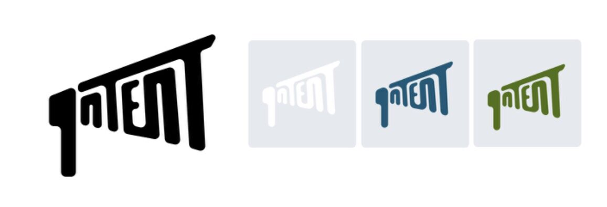
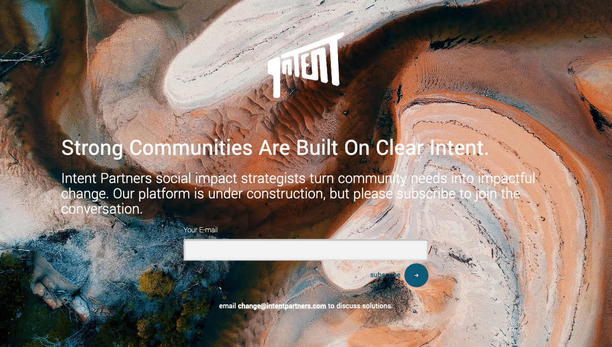

Intent Partners
Intent Partners is a social impact consultancy that empowers businesses and consumers to work together and improve communities.

Intent Partners is a social impact consultancy that empowers businesses and consumers to work together and improve communities.
User Research
UX Design
Visual Design
Branding & Identity
Frontend Development
Competitive Analysis
User Surveys
User Personas
User Stories & Flows
Wireframes
User Testing
Brand Identity
Visual Design
Hi-Fidelity Prototype
Responsive HTML and CSS
Survey Monkey
Sketch
Usability Hub
Invision
Atom
Git & Github
I discovered an opportunity to improve the way that companies approach social impact strategies and designed Intent partners, a social impact consultancy offering a suite of management services and digital mapping tools.
The client, Intent Partners, a startup social impact agency, needed to create a digital presence that differentiated them from organizations with similar missions.
Discovering that employees are unclear about how to drive corporate social impact and that consumers are seeking transparency, the project seeked to fill a previously unmet market need by designing tools for companies to see and pursue local micro impacts and for consumers to seek out businesses that commit to their local community. The intent partners site was designed to introduce the company and its services while filling this unmet need.
Personas were constructed to summarize and represent the user research data.


Impactual, Do Something Strategic, and Bridgespan Group are three consultancies that take a unique apporoch to advising their clients on developing powerful social impact initiatives. Impactual touts it focus on real impact over optics, Do Something Strategic provides unique access to proprietary data on the Gen Z and millennial audience, and veteran leader, Bridgespan Group advises change-making organizations and investors.While they all use story telling to demonstrate their individual acumen, none tackle the needs expressed by users, such as providing a transparent tool for consumers to identify real-impact focused businesses, proprietary opportunity discovery and impact managing tools, and resources to activate the corporate workforce as impact evangelists.
| As a business leader, | I want to see an explanation of what services Intent Partners offers so that I know the site is relevant to my business. |
| As a business leader, | I want to see case studies of Intent partners work with results presented clearly and interactively so that I know that I know they can deliver the clear and transparent results that demonstrate measurable impact on pressing social problems that will resonate with millennial consumers. |
| As a business leader, | I want to see an evolving map of social needs and brief reccomendations of how to help so that I can prosthelytize involvement in my workplace. |
| As a consumer, | I want to see an Intent Map illustrating where concrete results were created, so that I can make decisions on where to support cultural initiatives that will create a quantifiable financial impact to a cause. |
| As a user, | I want to see relevant contact, social, and mailing list information so that I can follow up to engage IPs services or keep in contact until that time comes. |
Five user flows were created to document the path users would need to follow to achieve key user stories.
View introduction and services offered
Verify outcomes via case studies
View the community needs map to identify opportunities to help
View the intent map showing companies with Intent
View the the revelevant contact, social media and mailing list information

I evaluated the user flows and created a site map to document the pages/sections needed to be constructed for a user to achieve each flow. I then created sketches and wireframes to determine how to best visually represent the components of the map. Knowing what a potential layout may look like allowed me to begin to consider the text and graphical content required to most efficiently communicate what was necessary in each area of the web app.As I was working on this, I considered how to best structure menus, what deserved a seperate page and what would be best shown on a scrolling one page landing.So how would these pages tell the story? The content needed to cover all the bases so extensive thought went into what each area of the site would contain and it was compiled to begin strategizing a plan.It was challenging to create an architecture that packed significant content in an approachable way that wasnt overbearingly heavy on the number of pages.

Initial sketches served as an opportunity to begin to experiment with potential layouts of the information.
Sketches were refined to produce the first round of paper wireframes.

Paper wireframes were used as a basis to develop digital wireframes.

The client had already decided on a name and wanted to include bullhorn imagery in the branding but there was a lot of room to decide how to implement this.
It was useful to think about the iconography and energy around the concepts that are inherent to the social responsibility industry.
Because the client wanted to include bullhorn imagery, reminiscent of marches and grassroots action in the logo, this was kept in mind when it was time to sketch early concepts.
Early sketches were preference tested for clarity on which images were most pleasing to viewers and results showed that two options performed the best, each garnering 33% of votes.
Both were refined and preference tested directly against one another. While both included the bullhorn imagery, option 1 is markedly more creative, and visually engaging, but possibly too busy to meet the clean and simple aesthetic that's desires. Option 2 is clean, and easy to read but perhaps too common feeling.
While the results were pretty evenly divided, the comments brought some things to light. Readability was a issue in option 1 but it was preferred for its “cleverness”. Option 2 didn't flow and the hand wasn't … preferred, but it was more “readable”. How could I keep things clever but still readable? I went back to the drawing board to rustle up new ideas.
Ultimately a refinement of option 1 accounting for the common concerns proved the strongest option.
The Yantramanav typeface was selected for its sans serif simplicity and superb readability at various weights.
The color palette chosen included a selection of rich jewel tones and coordinating tints for a simple, bold and energetic appeal.

A full suite of branding guidelines were defined and would continue to evolve as the project developed.
Several improvements were considered and defined moving from wireframe to high fidelity mock-up. For instance, adding calls to action in spaces where they added usability value but weren’t decidedly necessary earlier for minimum functionality.
Choosing compelling imagery that was engaging and not overly illustrative to the point of being cliche proved challenging. I chose to focus on imagery that captured the spirit and essence of the company’s modern and youthful, yet mature perspective.

Mockups were reviewed for opportunities for improvement. Recommendations primarily centered on improving typography in ways such as:
Reduce the height of the header and increasing font weight for improved accessibility
Make team members professional titles smaller and closer under names
Make footer text smaller than subscribe section
Ensure all text adheres to maximum characters per line guidelines
Use Typescale to define better typography sizing
Additional recommendations included adding a sub-header to the hero images for a clearer introduction to the content.

Testing occured with two participants, who were each asked to complete five tasks according to this script:
Visit the services section of the site and indicate which service you find most engaging.
Visit the case studies and open the case study for Something in the Water.
Visit the community needs map and search for local educational needs. View the need and read more information.
Visit the intent map and search for local concerts. View concert details and read more information.
Visit the contact page and write Intent Partners a message.
My users included David Blanchard, age 34, Pharmacist, of North Plainfield, NJ, an active and experienced web user and Sophia Mckenzie, age 55, Estate Manager, of Brooklyn, NY, an avid browser with limited comfort with electronic devices.Testing indicated that tools would be better named “maps” as it better indicates to less saavy users what to expect. Results would be better called “case studies” for the same reason. Changing these labels to be more intuitive will make it easier for an inexperienced user to navigate the site.

The prototype was further refined based on feedback on the typography. Improvements to sizing, spacing and content clarity improve the prototype experience.

Intent Partners presented the challenge to create a digital brand and presence for their consultancy as they move forward in formally establishing their organization. While they had a wide breadth of accomplishments credited to them, the vision was not fully articulated and reflective of current market and user needs. After investigating both and iteratively testing solutions to meet both the consumer need for social impact transparency and business need for local access, we have designed an MVP Product to position Intent Partners as a unique consultancy that offers not only their expertise, but a growing set of digital tools that empower any user to encourage and support the conversation around corporate social impact.Next steps for this project include development and deployment. A landing page, using HTML5 and CSS3, has been deployed while full development is underway.
I design solutions keeping the user and market needs in mind first, but also with developmental capabilities as well. In considering the application of mapping tools, it was valuable to consider the complexity of development required to achieve certain goals and tailor this to the particular projects restraints.
Research will throw unexpected information at you. Sometimes your project will allow for exploration of it, and at times, it won't. When I set out to better meet the needs of corporate clients, I discovered that providing a tool to their consumers also benefitted my original goal in a synergistic way. If I had not been open to exploring unexpected solutions, a valuable and unique approach could have been missed.